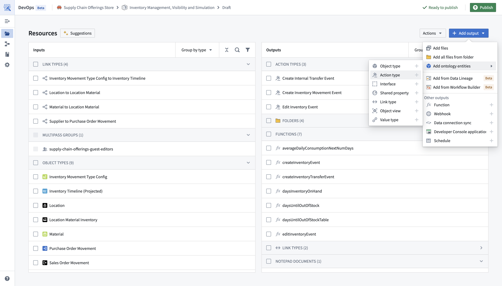
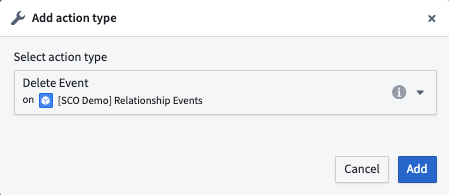
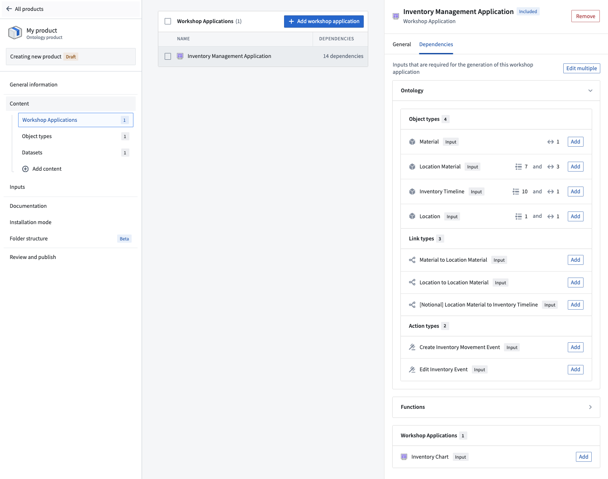

Use Foundry DevOps to include your action types in Marketplace products for other users to install and reuse. Learn how to create your first product.
Most action type features are supported, except actions that reference object types with unsupported features. When preparing your action type for packaging, ensure your action type Security & Submission criteria does not reference a user; update any user references to refer to groups instead.
To add an action type to a product, first create a product and then select the Action type content type as below.

You will then be prompted to choose an action type.

While you can select action types directly, we recommend first adding content like Workshop applications and then selecting relevant actions via the dependencies panel as shown below.
